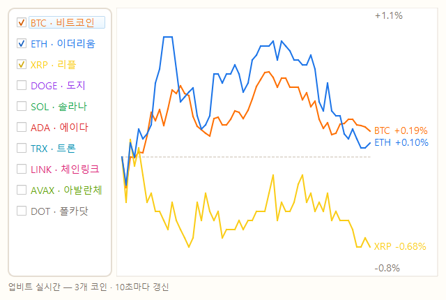

연습장을 벗어나 — 진짜 데이터로
덱 2의 시장은 강의용 가상 서버였습니다. 이번엔 업비트가 실제로 운영하는 공개 API에 접속해, 지금 이 순간의 진짜 코인 시세를 내 프로그램으로 가져옵니다 — 코인을 클릭해 고르면 한 차트에 겹쳐 보이는 시세 뷰어.
키도 가입도 없이 — 그냥 요청하면 준다
업비트(국내 최대 코인 거래소)는 시세 조회 API를 무료·무인증으로 공개합니다.
Base URL https://api.upbit.com/v1
| 메서드 | 경로 | 설명 |
|---|---|---|
| GET | /market/all | 거래 가능한 전체 코인 목록 (KRW-BTC, KRW-ETH, …) |
| GET | /ticker?markets=KRW-BTC,KRW-ETH | 여러 코인의 현재가를 한 번에 |
| GET | /candles/minutes/1?market=KRW-BTC&count=60 | 1분봉 60개 — 최근 1시간 가격 흐름 |
덱 2와 완전히 같은 패턴(GET + JSON) — 키 헤더만 없을 뿐. 초당 요청 제한이 있으니 갱신은 몇 초에 한 번이면 충분합니다.
코인을 클릭하면 — 한 차트에 겹친다.
왼쪽에 코인 목록(비트코인·이더리움·리플·도지…), 체크한 코인들의 최근 1시간 흐름이 오른쪽 한 차트에 색깔별로 겹쳐 그려집니다. 어떤 코인이 오늘 제일 뜨거웠는지 — 한눈에.
1억짜리와 700원짜리를 — 한 차트에?
비트코인은 1억 원대, 리플은 수백 원대 — 가격 그대로 그리면 리플은 바닥에 눌린 직선이 됩니다. 그래서 "1시간 전 대비 몇 % 변했나"로 바꿔 그립니다 — 그래야 흐름을 공평하게 비교할 수 있습니다.
스펙을 주고 — 3문장으로 부탁한다
코인 시세 차트 앱을 coins.py로 만들어줘. 왼쪽에 코인 목록(BTC·ETH·XRP·DOGE·SOL 등 주요 10개)을 체크박스로 두고, 체크한 코인들의 최근 1시간 가격 흐름을 오른쪽 한 차트에 색깔별 라인으로 겹쳐 그려줘. 가격 차이가 크니까 1시간 전 대비 변화율(%)로 정규화해서 그리고, 5초마다 갱신해줘. 데이터는 업비트 공개 API를 써줘 (키 불필요): 1분봉은 GET https://api.upbit.com/v1/candles/minutes/1?market=KRW-BTC&count=60, 현재가는 GET https://api.upbit.com/v1/ticker?markets=KRW-BTC,KRW-ETH 형태야. PySide6로 만들고, 통신 중 창이 얼지 않게, 외부 차트 라이브러리 없이 그려줘. 나는 처음이니까 설명하며 진행해줘.
뼈대는 이 장 내내 같습니다 — 무엇을 / 스펙·제약 / 내 수준. 이번엔 스펙이 "진짜 회사의 공개 문서"라는 것만 다릅니다.
지금 이 순간의 — 진짜 시장이 내 창에

확인 포인트
- 휴대폰 업비트 앱과 가격이 같은가 — 진짜 데이터라는 증거
- 체크/해제하면 라인이 바로 생기고 사라지는가
- 제일 많이 오른 코인이 맨 위 라인 — 오늘의 주인공은?
덱 2와 코드 구조가 거의 같다는 걸 눈치챘다면 — 정확합니다. API가 바뀌어도 패턴은 하나.
내 상황판으로 — 다듬기
"하루치도 보고 싶어"
1시간/6시간/24시간 버튼 — 분봉 대신 시간봉으로.
"현재가·등락률 표시"
목록 옆에 현재가와 24시간 등락률을 색깔로.
"±3% 넘으면 알려줘"
급등락 시 창 깜빡임/소리 — 진짜 상황판처럼.
다 됐으면 덱 1과 똑같이 — coins.exe.app로 묶어 바탕화면에. 아침마다 더블클릭하는 내 도구가 됩니다.
그런데 쇼핑몰은 — 왜 API를 안 줄까
데이터가 곧 자산
상품 가격·재고·리뷰는 쇼핑몰의 경쟁력 그 자체 — 경쟁사가 긁어가면 최저가 전쟁에서 밀립니다. 내줄 이유가 없습니다.
어뷰징 걱정
공개 창구를 열면 봇이 초당 수천 번 두드립니다 — 서버비는 늘고, 사재기·매크로 같은 악용도 함께.
사람에게만 보여준다
그래서 "브라우저로 들어온 사람"에게만 화면을 줍니다. 업비트 시세처럼 공개가 이득인 데이터만 API로 나옵니다.
세상의 데이터는 둘로 나뉩니다 — API를 주는 곳(업비트·공공데이터·날씨)과 안 주는 곳(쇼핑몰·SNS·대부분의 사이트). 안 주는 곳은 어떻게 할까요?
API가 없으면 — 사람처럼 들어간다
있으면 무조건 API 먼저.
화면에 보이면 — 긁을 수 있다.
도전 과제: 관심 상품 페이지를 Playwright로 열어 가격만 뽑아 내 앱에 표시하는 "가격 추적기" — 다음 덱 크롤링 + 오늘 배운 데스크톱을 합치면 됩니다. 다음 덱을 마친 뒤 "방금 한 크롤링을 이 앱에 붙여줘"라고 부탁해 보세요.
1인 1분 — 내 상황판 자랑
20초 화면 시연(코인 체크하며 라인 넣고 빼기) · 30초 내가 다듬은 것 · 10초 오늘의 발견(제일 많이 오른 코인?). 완성도보다 직접 시도한 것이 평가 기준.
내 PC의 프로그램이 — 세상의 데이터를 쓴다
투두(로컬)에서 시작해 가상 시장(연습 API)을 거쳐 업비트(진짜 API)까지 — 그리고 API가 없는 곳은 Playwright로 들어가면 된다는 것까지. 데스크톱 프로그램과 데이터 세계의 지도가 손에 들어왔습니다.